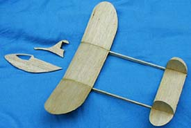
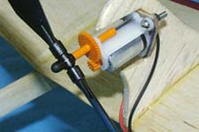
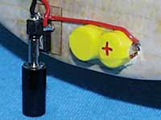

| In the beginning ...... there was a pretty little sport electric model designed by Jim Duckworth. I decided to build one to introduce myself to Electric FF and thought that I could improve the way it was assembled; this is it. So, this is an unusual modification. Most folks change the aircraft but keep the original construction while I've kept the model exactly as it was but changed the way it is put together. The changes do not make it faster to build. However, they will make assembly easier and give a straighter structure.Jim's original structure requires the wing to be fitted into a slot in the fuselage before adding ribs at the dihedral breaks and then assembling the booms and tail surfaces in the air. I thought the chances of ending up with a true, unwarped structure were problematic, so I came up with the method described below. This allows the wings to be built on the bench, so they wont warp. Then the complete main structure, consisting of the flying surfaces and booms, is assembled on a flat surface so that it will be properly aligned. The motor mount is added next and finally the fuselage, which is just a nicely shaped battery holder, is glued on the bottom. Do cut the 'cockpit window' into the fuselage as it adds a lot to the appearance in the air. ConstructionYou'll need one sheet of 1/32 x 3 x 36 very light balsa for the wing, stab and rudders. The sheet should weigh 6-7 grams. Another sheet of medium 1/8 x 3 x 15 is used for the booms and fuselage. A piece of light 1/16 x 3 x 3 forms the power pylon core. You'll also need some clear dope, white glue and cyano.Cut out all the parts first. Note that you must make three ribs instead of the two required by the original design. The other structural change is that the fuselage is separated into two parts. The main part now has a flat surface under the wing where you'll glue the centre rib during final assembly. The power pylon and the part of the fuselage above the wing is a separate piece. If it was made from a single piece of wood it would be pretty fragile, so it is laminated from a central core of light 1/16" balsa and two side pieces of 1/32". The pieces are assembled with white glue, making sure that the grain in the side pieces is at 90 degrees to the grain in the core. Round the edges of the fuselage and booms where they form the outline of the model; do not round edges that will be glued to other parts. Sand the stab and rudders thinner. The wing is cut out as a single piece. The airfoil is formed and the wing assembled in the following steps:
|
Assemble the tail surfaces by gluing the fins to the stab. Thinned cyano does a good job.
|
|
Now assemble the main airframe:
|
 |
|
When the main assembly is dry, glue the pylon to the top of the wing over the centre rib, making sure it is aligned accurately fore and aft and is properly vertical.
Finally, glue the main fuselage onto the underside of the centre rib, again making sure it is accurately lined up with the centre line and is vertical. Apply one coat of dope overall and, if you like, decorate the model by adding a narrow piece of coloured tissue wrapped round the wing leading edge; it doesn't add much weight but will add a lot of dent resistance to the leading edge.  Install the motor. Temporarily tape the batteries to the fuselage with masking tape. Move them to get the CG right; it should be between 45 and 55 mm (1 3/4" to 2 1/4") back from the wing leading edge. Jim says 55mm; mine flies OK at 45mm, so its not too critical. You can test glide to verify the battery position. When you are happy with the CG cut a hole in the fuselage and install the batteries through the hole. Install the charge jack etc. just behind the batteries. Hook up the batteries, motor and charging point with suitable wire. Balance the prop. |
WeightsMy model has a KP00 and two Sanyo 50 mAh cells installed. It weighs 24.6 grams complete.
|
Power I used a 1.3mm miniature power connector (the tubular type) as both power connector and switch. It is a combined charging socket and switch, is a PCB mounting type, and weighs 0.45 grams.The socket/switch has three pins. It was cyanoed to a small 1/64" ply plate which was pierced to accept the pins. The third pin, at the centre of the underside of the socket, must have the wire soldered to it before mounting the unit on the fuselage. A hole is made through the fuselage, the wire threaded through and the socket, on its plate, is glued to the fuselage. This is the negative battery wire and runs directly to the negative tag on the battery. The battery positive tag connects to the central pin of the socket and thence to the motor negative (its a pusher so the motor runs backwards). The motor positive runs to the side pin of the socket; This pin is isolated when the charger is connected. It switches on the motor when the plug is pulled out. FlyingThistle is a 0 - 0 setup. It glides flat and fast. Let it turn which ever way it wants and not too tight - about a 30 foot circle.Beware lift - it will vanish. Mine flew in a 30-40 foot right-hand circle without any adjustment though the turn opened right out when the power ran down. I didn't like the straight glide so I bent a little right rudder into the left-hand fin. This tightened the power turn very slightly but the glide was now a definite turn though still more open than the climb. A 15 second charge from three alkaline D cells gave a 20 second motor run; this was enough to climb to 30 feet or so with flights of 30-40 seconds at dusk. However, there was a tendency to mush along nose high as the initial power burst died down. The KP00 is supplied with an adjustable pitch propeller which I guessed I might have set to too fine a pitch. This could result in too low a climb speed which would explain the mushing and slow climb so I increased the propeller pitch to about 30 degrees, giving 4,600 - 4,700 rpm on a 45 second charge. This increased the climb speed and altitude as well as curing the mushing tendency. My Thistle now flies consistently for 90 seconds off a 45 second charge in liftless late evening conditions. Jim's warning about thermals seems justified even though the glide is relatively steep due to the drag from the windmilling prop, which continues to spin until the model lands. Martin Gregorie |
Return to
Plans Page | FF Gallery
Copyright 1999-2014, All rights reserved